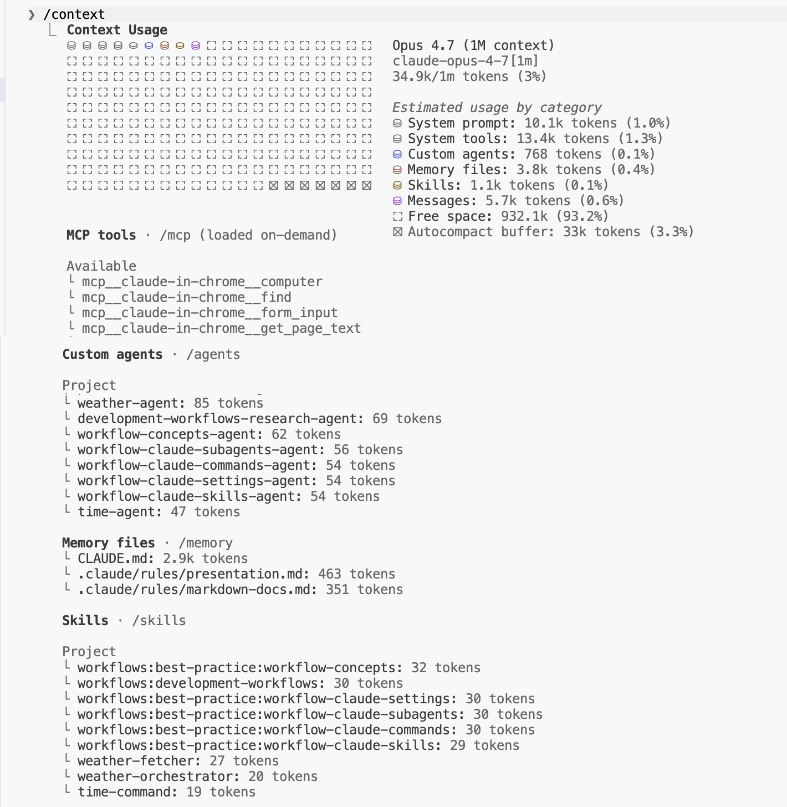

From your first conversation to wiring your first workflow
An onboarding guide for non-engineers & engineers alike.
The Learning Journey
Six Topics, One Continuous Arc
Built from the inside out: what Claude sees, what it always knows, who it becomes, what it's trained to do, how you trigger it, and how it all wires together.
1🧠 Context — What Claude Sees
2📋 CLAUDE.md — Standing Instructions
3👤 Agents — The Specialist
4🎓 Skills — The Training
5⚡ Commands — Your Shortcuts
6🎼 Workflow — All Together
Topic 1
🧠 Context (What Claude Sees)
Before anything else — before agents, before skills — there's Claude's brain. Everything Claude can see, remember, and reason about right now lives in that brain. If it's not in there, Claude doesn't know about it.
Claude's Brain
Think of it like this
Imagine Claude has a brain that holds everything it's aware of right now — your question, every file it's opened, every tool result, every word it's said back to you. Inside that brain is a small working area (picture a desk) where the actual thinking happens. If a thought isn't in the brain, Claude can't use it. Simple as that.
Everything you give Claude in a conversation lands in its brain:
💬
Your messagesEvery question, clarification, and follow-up
📄
Every file Claude opensRead a 500-page PDF? All of it is in the brain now.
🔧
Every tool resultWeb searches, command output, screenshots — all held in memory
🗨️
Claude's own previous repliesEverything Claude has said so far in this chat
Two Things Every Non-Engineer Should Know
1. The brain is finite. It can hold about 1 million tokens — roughly 750,000 words, or a short novel. Big, but not infinite. 2. The brain empties at the end of every chat. When you start a new conversation, Claude remembers nothing from the last one unless you tell it again.
What Loads at Session Start
The moment you open Claude Code, certain things land in Claude's brain before you've typed a word. The rest waits in the wings — only loaded when you actually need it. This is called progressive disclosure.

📋
CLAUDE.md — full contentYour standing instructions, every line. Always pinned in the brain at startup.
🎓
Skills — descriptions onlyClaude knows which skills exist and what each does. The full instructions for a skill load only when that skill is invoked.
👤
Agents — descriptions onlyThe roster of specialists and when to use each one. Each agent's full system prompt loads when it's dispatched.
🔌
MCP tools — on-demand (when configured)External tool definitions can be deferred so they're only fetched when Claude actually needs them — keeping the brain light at startup.
The One-Liner
Only the descriptions of skills and agents are loaded at startup — the rest is fetched on-demand. That's progressive disclosure. MCPs work the same way when set up for deferred loading.
Why It Matters
The brain has a fixed budget (~1M tokens). Loading every skill, agent, and external tool upfront would burn the budget before you've typed a word. Progressive disclosure keeps the brain light. Run /context any time to see exactly what's currently loaded.
Keep the Brain Clear
The more stuff crammed into Claude's brain, the harder it is to focus on what matters. This is called context rot — performance drops as the brain gets crowded.
Tip from Thariq (Anthropic) — Apr 16, 2026
"Every turn is a branching point." After Claude finishes a response, you don't have to just keep typing. You have five options — and four of them exist to keep the brain clear.
Option
When to use it
Continue
Same task, everything in the brain still matters
Rewind (tap Esc twice)
Claude went down a wrong path — jump back and try again with what you learned
/compact
The brain is bloated — ask Claude to summarize and keep going on top of the summary
/clear (fresh chat)
Starting a truly new task — wipe the brain clean, start with a fresh brief
Subagent
The next step will make a mess — send a helper to do it in their own brain and only bring back the answer
Rule of Thumb
When you start a new task, start a new chat. Don't let yesterday's thinking clutter today's brain.
How to Manage Your Context
You can't create the context — it's just there, the moment you open a chat. But you can see how full it is, trim it down, or wipe it clean. Three commands give you full control.
The Commands
/context shows you how full the brain is. /compact summarizes it. /clear wipes it.
1
Check how full the brain is — /contextShows a breakdown of how many tokens are used and what's taking up space (system prompt, tools, files, conversation).
2
Trim or reset — /compact or /clear/compact keeps a short summary so you can continue. /clear wipes everything for a truly fresh start.
3
Start the next task freshThe brain is light again — re-state the goal, and Claude works without yesterday's clutter.
Think of it like this
/context is checking how cluttered the desk is. /compact is filing the paperwork into a one-page summary. /clear is walking the assistant out of the room and back in for a fresh one. Same person, same skills — just a tidier workspace.
# The three context commands/context# Check how full the brain is right now/compact# Summarize what's there and keep going on top/clear# Wipe the brain — fresh chat, nothing remembered
Takeaway
Check first with /context. Trim with /compact. Reset with /clear when starting a new task.
Topic 2
📋 CLAUDE.md (Standing Instructions)
If context is Claude's brain, CLAUDE.md is the standing instructions pinned in that brain at the start of every chat — rules Claude has memorized before you've said a word.
The Employee Handbook
Think of it like this
Imagine hiring a brilliant new assistant every single morning — someone who forgets everything at 5pm. You'd get tired of re-explaining "we say clients, not customers" and "always CC my manager" over and over. So you pin those rules into their brain before the day starts. That's CLAUDE.md: a short list of standing instructions Claude reads first, every time.
It's just a plain-text file at the top of your project. Here's a CLAUDE.md a non-engineer might write:
# CLAUDE.md## About this project
This is the Q2 marketing campaign brief — targeting small business owners.
## How I want you to talk to me
- Always explain technical terms in plain language
- Before you run any command, tell me what it does in one sentence
- If I ask for an opinion, give me one — don't hedge
## House rules
- We say "clients" not "customers"
- Never edit files in the /archive folder
- Keep emails under 150 words
You Don't Have to Write It From Scratch
Claude can draft your first CLAUDE.md for you. The next slide shows how.
How to Create Your CLAUDE.md
You don't need to write CLAUDE.md by hand. Claude can look at your project and draft one for you.
The Command
Type /init inside Claude Code, in your project folder. Claude does the rest.
1
Type /init in Claude CodeMake sure you're in your project folder. No other setup needed.
2
Claude reads your projectIt looks at your files, folder names, and README to figure out what the project is about.
3
Claude drafts a starter CLAUDE.mdSaved to the root of your project. Open it and edit like any other document.
Think of it like this
Running /init is like asking the new hire to read everything on the shared drive before you meet them — they walk in already knowing the project's shape, and they write up what they learned as a handbook for future Claude.
# The 60-second workflow/init# Claude drafts the fileCLAUDE.md appears # In your project root
open, edit, save # Tweak it like any doc
Takeaway
You'll keep improving it over time (Boris's tip on the next slide). But /init gets you to a working draft in under a minute.
Grow CLAUDE.md With Every Mistake
Tip from Boris Cherny (creator of Claude Code) — Feb 1, 2026
"After every correction, end with: Update your CLAUDE.md so you don't make that mistake again. Claude is eerily good at writing rules for itself."
The CLAUDE.md isn't something you write once and forget. It's a living memory of every lesson you've ever had to teach Claude. The workflow:
1
Claude makes a mistakeIt uses the wrong tone, touches a file you didn't want touched, skips a step
2
You correct it"Actually, we never write in all caps. And always confirm before sending."
3
You say: "update your CLAUDE.md so this doesn't happen again"Claude writes the new rule for itself. Next conversation, it won't repeat the mistake.
One Rule
Keep it short. Under 200 lines. Long CLAUDE.md files get ignored — same as a 50-page employee handbook nobody reads.
What Goes in CLAUDE.md
# CLAUDE.md## Project Overview
This is a TodoApp with a FastAPI backend and React frontend.
## Key Commands
- npm run dev# Start frontend
- uvicorn main:app# Start backend
- pytest# Run tests## Architecture
- Routes follow the pattern in routes/todos.py
- Frontend components use Tailwind CSS
- Tests mirror the source tree: tests/test_*.py## Rules
- Always write tests for new endpoints
- Use the existing Sidebar component for navigation
- Keep CLAUDE.md under 200 lines
Keep It Short
Aim for under 200 lines. Files over 200 lines consume more context and may reduce adherence. Put detailed instructions in .claude/rules/ instead.
How CLAUDE.md Loads
Claude Code uses two mechanisms to find CLAUDE.md files:
Ancestor Loading (UP)
At startup, Claude walks upward from your current directory and loads every CLAUDE.md it finds.
Always loaded immediately.
Descendant Loading (DOWN)
CLAUDE.md files in subdirectories below you are loaded lazily — only when Claude reads files in those folders.
Loaded on demand.
# Example: running `claude` from /myapp
/myapp/
CLAUDE.md# Loaded at startup (current dir)
frontend/
CLAUDE.md# Loaded when you touch frontend/ files
backend/
CLAUDE.md# Loaded when you touch backend/ files
Rules Directory
For topic-specific instructions, use .claude/rules/*.md. Each rule file can target specific file patterns using # Glob: pattern at the top — they only load when Claude works with matching files.
Topic 3
👤 Agents (The Specialist)
An agent is Claude playing a specific role, with a specific job title — a weather reporter, a copy editor, a research analyst. Same Claude, different hat.
The Restaurant Kitchen
Think of it like this
Without an agent, you walk into a random kitchen and shout "make me pasta!" — whoever happens to hear you might boil instant noodles or make a five-course Italian meal. With an agent, you're walking up to a specific person with a specific job title. The Italian chef makes pasta the Italian-chef way. Every time.
Plain Prompting (asking a stranger)
You ask Claude "What's the weather in Dubai?"
It might guess from its training data, search the web, or make something up.
You don't know what it'll do.
With an Agent (your specialist)
A weather-agent has a clear job description:
"Always check the official Open-Meteo weather service. Always return the temperature in a clean, consistent format."
Same question, same approach, every time.
Prompting vs. Agent — Side by Side
The difference in one picture: prompting is asking a stranger on the street; using an agent is asking your dedicated specialist.
Prompting (stranger)
Agent (specialist)
Who answers
Whoever happens to be there
The person you hired for this exact job
Source of truth
Could be anywhere
Always the official weather service
Format
Whatever comes out
Clean, consistent temperature + unit
Twice in a row?
Different each time
Same method, same shape
Takeaway
Agents don't make Claude smarter — they make it predictable. Same question → same approach → same quality. That's what you need for anything you'll do more than once.
Agents Get Their Own Brain
Tip from Thariq (Anthropic) — Apr 16, 2026
"When Claude spawns an agent, that agent gets its own fresh brain. It can do as much work as it needs, then synthesize its results — only the final report comes back to you."
This is quietly one of the most useful things about agents, and it connects directly to what we learned about context:
🧹
Messy work stays in the agent's brainTwenty file reads, a dozen failed attempts, three dead ends — all of it stays in the agent's brain, not yours.
📦
Only the conclusion comes backThe agent hands you a tidy summary. Your brain stays clear.
💡
Mental test: "Do I need the working, or just the answer?"If just the answer → send an agent. If you need to see every step → do it yourself.
How to Use It
Just ask. "Spin up an agent to read through these ten PDFs and summarize them." Claude will dispatch a specialist, they'll churn through the work in their own brain, and come back with just the summary.
How to Create Your Own Agent
You don't write an agent from scratch — Claude helps you build one. Type /agents inside Claude Code and a guided menu opens.
The Command
Type /agents in Claude Code. A menu appears with your existing agents and an option to create a new one.
1
Type /agentsA menu opens listing your existing agents plus "Create new agent".
2
Tell Claude what the agent should do, in one sentencee.g., "Research analyst that summarizes competitor pricing from their websites."
3
Claude writes the agent file for youIt creates a file with a job description, allowed tools, and model. You can edit it like any document.
Think of it like this
Creating an agent is like writing a job description for a new hire. You say what the role is, what tools they get, and how they should behave. Claude drafts the JD; you review and adjust.
# Where your new agent lives.claude/agents/your-agent.md# A plain markdown file
Takeaway
Agents are just text files. Anyone on your team can create, share, or edit one. No coding required.
Agent Config Fields
The config block at the top of an agent file controls its identity and capabilities:
name RecommendedUnique identifier — defaults to filename if omitted
description RequiredWhen to invoke. Use "PROACTIVELY" for auto-invocation
modelhaiku, sonnet, opus, or inherit (default)
toolsAllowlist of tools. Inherits all if omitted
skillsList of skill names to preload into agent context at startup
maxTurnsMaximum agentic turns before the agent stops
memoryPersistent memory: user, project, or local
colorVisual color in task list: red, blue, green, etc.
Topic 4
🎓 Skills (The Training)
If an agent is a person with a job title, a skill is a specific thing they've been trained to do — a certification, a how-to, a recipe.
The Training Manual
Think of it like this
When someone joins your team, they have a role (agent), but they also go through specific training modules — how to use the CRM, how to write a proposal, how to run a standup. Each training module is a skill.
A Real Person Example
Shayan has many skills:
💻
Engineering skillCan write code
🎮
Gaming skillKnows game mechanics
📖
Reading skillCan digest and summarize long documents
Each skill has its own knowledge and methods. Shayan uses the right skill for the right task. Claude works the same way.
When to Turn Something Into a Skill
Tip from Boris Cherny (creator of Claude Code) — Feb 1, 2026
"If you do something more than once a day, turn it into a skill."
The rule is simple: anything you're explaining to Claude over and over is a skill waiting to be written down. A few examples from real teams:
📝
"Format my weekly update"Same sections, same tone, same length every Monday. That's a skill.
📊
"Pull this week's numbers from the dashboard"Same login, same filters, same chart. That's a skill.
✉️
"Draft the client email the way we always do it"Same opening, same structure, same sign-off. That's a skill.
Takeaway
Skills are how repetition becomes reliability. Write it down once, and Claude does it the same way forever — or until you update the skill.
Why Separate Agents and Skills?
Agent = The Person
The weather-agent is the person with the job title "Weather Reporter".
It defines the role and behavior.
Skill = The Training
The weather-fetcher skill is the specific training on how to fetch weather data.
It contains exact instructions:
Go to this specific weather service
Read the temperature from this specific place
Return it in this specific format
The Power
One agent can have multiple skills, and one skill can be used by multiple agents. Skills are reusable building blocks. Agents are the people who use them.
How to Create Your Own Skill
Skills don't have a slash-command creator — they're plain markdown files you create directly. The pattern is simple enough that you can write your first one in a minute.
The File
Create .claude/skills/<your-skill-name>/SKILL.md in your project. That's it.
1
Pick a repeated taskSomething you explain to Claude more than once. "Format my weekly update" is a perfect first skill.
2
Make a folder and a SKILL.mdPath: .claude/skills/weekly-update/SKILL.md. Or ask Claude: "Turn this into a skill called weekly-update."
3
Write the recipe in plain EnglishSame words you'd use to explain it to a coworker. Skills are instructions, not code.
Think of it like this
Writing a skill is like writing a page in a recipe book. Title at the top, ingredients, steps. Anyone on the team can open it and follow along — Claude included.
# File: .claude/skills/weather-fetcher/SKILL.md---name: weather-fetcherdescription: Fetch current temperature for Dubai from Open-Meteo APIuser-invocable: false---# Weather Fetcher
To fetch the current temperature for Dubai:
1. Call the Open-Meteo API:
https://api.open-meteo.com/v1/forecast?latitude=25.2048&longitude=55.2708¤t=temperature_2m
2. Extract current.temperature_2m from the response
3. Return: "The temperature in Dubai is {value}{unit}"
Takeaway
The skill contains instructions, not code. It tells Claude how to do something using its existing tools. The next slide shows the small config block at the top.
Skill Config Fields
The small config block at the top of a SKILL.md (the "frontmatter") controls how the skill behaves:
nameDisplay name and /slash-command. Defaults to directory name
description RecommendedWhat the skill does — shown in autocomplete, used for auto-discovery
user-invocableSet false to hide from / menu — becomes background knowledge only
allowed-toolsTools allowed without permission prompts when skill is active
modelModel to use: haiku, sonnet, or opus
contextSet to fork to run in isolated subagent context
Two Ways to Use Skills
User-invocable: appears in / menu, user runs it directly. Agent-preloaded: set user-invocable: false, then list it in an agent's skills: field — it becomes domain knowledge injected into that agent.
Topic 5
⚡ Commands (Your Shortcuts)
If CLAUDE.md is what Claude always knows, a command is what Claude does when you press one specific button. Slash commands turn a multi-step workflow into a single keystroke.
Commands — The Entry Point
Think of it like this
If agents are employees and skills are their training, a command is the manager's playbook — "when someone asks for a weather report, first ask them Celsius or Fahrenheit, then dispatch the weather team, then create the visual."
You've already seen five built-in commands in this presentation:
📋
/initDrafts a CLAUDE.md for your project (Topic 2)
👤
/agentsOpens the agent creator menu (Topic 3)
🧠
/contextShows how full Claude's brain is right now (Topic 1)
🧹
/clear & /compactReset or summarize the brain (Topic 1)
The Magic
You can write your own commands the same way. The next slide shows how.
How to Create Your Own Command
Commands are markdown files too. If you can write a recipe, you can write a command.
The File
Create .claude/commands/<your-command-name>.md. As soon as it's saved, /<your-command-name> appears in Claude Code's slash menu.
1
Pick a workflow you trigger often"Generate this week's status report." "Open Monday's standup template." Anything you'd want one keystroke for.
2
Create the filePath: .claude/commands/status-report.md. The filename becomes the command name.
3
Write the playbook in plain EnglishStep-by-step what Claude should do — including which agents to dispatch and which skills to invoke.
Think of it like this
A command is like a button on a coffee machine. One press, the machine grinds, brews, foams, pours. You don't think about the steps — you just want espresso. Slash commands are buttons you've labelled yourself.
# File: .claude/commands/weather-orchestrator.md---description: Fetch weather and create SVG cardmodel: haiku---
1. Ask the user: Celsius or Fahrenheit?
2. Use the weather-agent to fetch Dubai's temperature
3. Use the weather-svg-creator skill to create an SVG card
4. Show the user the result
Takeaway
Commands are how you turn a multi-step prompt into a single keystroke that anyone on your team can run.
Topic 6
🎼 Workflow (How They All Fit)
Five pieces, one orchestrated flow: a command kicks it off, an agent does the work using its preloaded skill, then another skill takes the result and turns it into output.
Command → Agent → Skill
This is the core architecture pattern of Claude Code workflows — demonstrated in this very repo by the weather example:
The Orchestration Flow/weather-orchestratorCOMMAND (entry point)
|
Step 1: Ask user C/F?
|
Step 2: Agent tool
|
v
weather-agentAGENT (specialist)
skill: weather-fetcherSKILL (preloaded training)
tools: WebFetch, Read
|
Returns: temp + unit
|
Step 3: Skill tool
|
v
weather-svg-creatorSKILL (invoked directly)
|
Creates: weather.svg + output.md
Two Ways Skills Are Used
The weather workflow demonstrates both skill patterns in a single flow:
Pattern 1: Agent Skill (Preloaded)
weather-fetcher is listed in the agent's skills: field.
Its full content is injected into the agent's context at startup. The agent reads it like a reference manual.
# In weather-agent.mdskills:
- weather-fetcher
Pattern 2: Direct Invocation
weather-svg-creator is called directly by the command via the Skill tool.
It runs independently in the command's context, not inside any agent.
# In the command promptSkill(skill: "weather-svg-creator")
How to Wire Your Own Workflow
A workflow isn't a separate file type. It emerges when one command calls one or more agents and skills in sequence. Here's how the weather workflow in this repo wires itself together — your own can follow the same shape.
The Recipe
One command at the top. One agent with a skill preloaded for fetching. One skill at the end for output. Wire them in the command file.
1
Write the command (entry point).claude/commands/weather-orchestrator.md — the playbook the user types.
2
Write the agent and its preloaded skill.claude/agents/weather-agent.md with skills: [weather-fetcher] in its config — the specialist + their training.
3
Write the output skill.claude/skills/weather-svg-creator/SKILL.md — invoked directly by the command after the agent returns.
Think of it like this
The workflow is the relay race. The command is the starter pistol. The agent is runner one (fetches the data, hands the baton back). The skill is runner two (turns the data into a visual). You don't run the race — you just point and say "go."
# The weather workflow — three files, one keystroke.claude/commands/weather-orchestrator.md# Entry point.claude/agents/weather-agent.md# Specialist + skill.claude/skills/weather-fetcher/SKILL.md# Preloaded into agent.claude/skills/weather-svg-creator/SKILL.md# Invoked by command# User types one thing:/weather-orchestrator
Takeaway
Every workflow you'll ever build follows this same shape: Command at the top, Agent + Skill in the middle, Skill at the end. Once you've wired one, the rest are variations on the theme.
Journey So Far
Six topics, one continuous arc
From understanding Claude's brain to wiring a complete Command → Agent → Skill workflow. The same six pieces compose every workflow you'll ever build.
The learning continues — hooks, MCP servers, settings, and more.